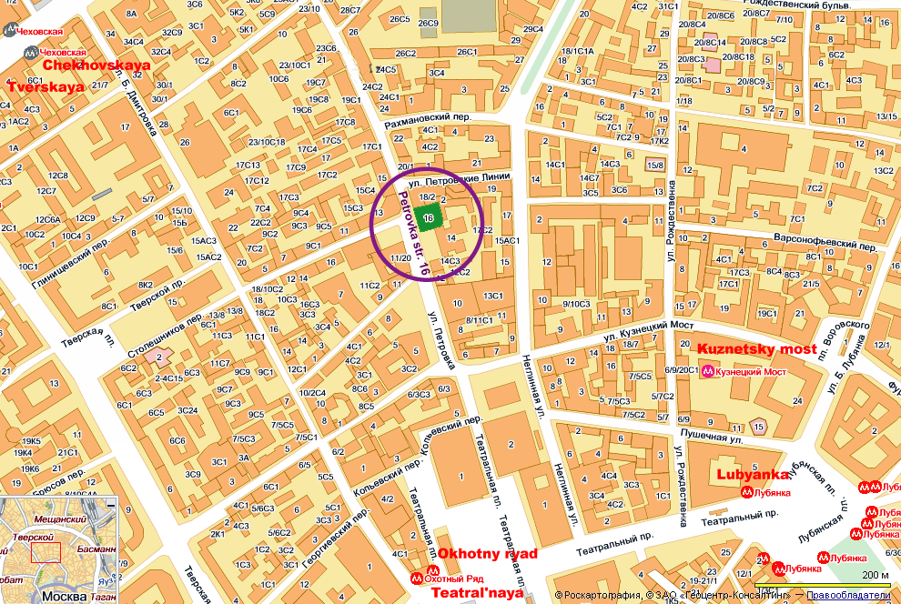
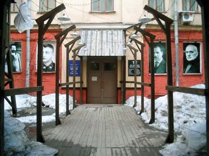
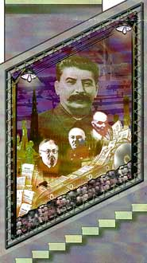
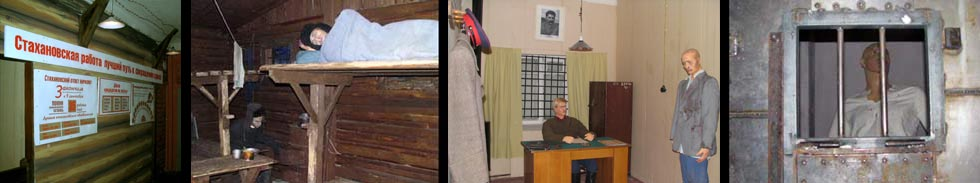
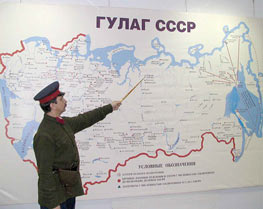
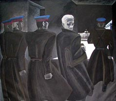
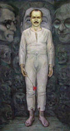
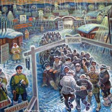
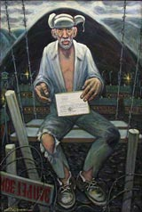

Учреждён Постановлением Правительства Москвы в июле 2001 г.
Концепция и план экспозиции музея охватывают историю массовых политических
репрессий на всей территории бывшего СССР.
Процесс уничтожения цвета советского народа охватил все слои населения:
учёных, творческую интеллигенцию, строителей, заводских рабочих и сельских
тружеников, священнослужителей, военных, дипломатов, разведчиков,
спортсменов, функционеров НКВД, партийных и хозяйственных руководителей,
активных участников революции и Гражданской войны - "белых" и
"красных". В том скорбном ряду - известные деятели Коминтерна,
лидеры компартий стран Восточной Европы и зарубежные инженеры,
приглашённые на стройки коммунизма.
Часть помещений и внутренний двор общей площадью 600 кв. м предназначены
для устройства художественной галереи (живопись, графика, скульптура).
Перед музеем поставлена двуединая задача: средствами науки, искусства,
одухотворённого слова разоблачать сталинизм и пробуждать чувство общей
вины, звать к милосердию.
В структуру музея входят: экскурсионное бюро, лекционный зал с кино- и
видеосистемой, хранилище фондов, центральная картотека, методический
кабинет, фототека, библиотека, читальный зал, издательство.
Открытие музея состоялось 18 мая 2004 г.
Музей работает с 11 до 16.
Выходные дни: воскресенье, понедельник.
Адрес: Москва, 103051, ул. Петровка, 16.
Тел.: 621-73-46
E-mail: gulag-museum@yandex.ru
Схема расположения музея:


ЭКСПОЗИЦИЯ "В ТИСКАХ РЕПРЕССИЙ"

1.Открывается экспозиция с портретной галереи уничтоженных Сталиным известных политиков и полководцев, деятелей науки и культуры и широкомасштабной композиции, состоящей из трех частей:а) "У конвейера смерти" (на фоне большого портрета Сталина - лица Вышинского, Ульриха, Шкирятова - над ленточным конвейером со смертными приговорами)
б) две диорамы с изображением Бутырской тюрьмы (Москва) и "Крестов" (Санкт-Петербург)
в) лагерная зона, вышки, нестройно бредущие заключенные, конвоиры, овчарки.
В экспозиции музея представлен фрагмент лагерного барака, кабинет следователя и карцер.

2.
Большая карта бывшего СССР, на которой отмечены все крупные зоны ГУЛАГа с населением более 17 миллионов, обреченных на медленную смерть.

Впервые демонстрируется карта размещения "спецпоселенцев", которых на 1 июля 1950 года насчитывалось 2 млн. 608 тыс. человек. Их судьба мало чем отличалась от судьбы заключенных (народы Прибалтики, Крыма, Кавказа, представители различных социальных групп).На двух стендах - документы, рассказывающие о создании и функционировании ГУЛАГа.
История строительства водных магистралей: "Беломорско-Балтийского канала", "Москва-Волга" - так называемых строек коммунизма - отражена на трех особых стендах.
Коллекция писем узника ГУЛАГа Б. Железовского (свыше ста писем).
Газеты "На революционном посту" внутреннеого издания НКВД по Саратовской области за 1937 г.
Большой интерес представляют персональные стенды, посвященные В.А. Антонову-Овсеенко, Б.Ш. Окуджаве, Г.С. Жженову.
3.
Художественная галерея отражает эпоху массового террора:
Триптих народного художника России, академика И.П. Обросова, посвященный памяти отца, бывшего директора института имени Склифосовского. Три сюжета: "В ожидании беды", "Обыск", "Арест". К этой серии примыкает портрет матери, возглавлявшей в годы войны эвакогоспиталь. Сама она и ее второй сын Андрей тоже подверглись репрессиям.


17 картин Ростислава Горелова, бывшего узника ГУЛАГа.Картины Ильи Бройдо - портреты А. Ахматовой, О. Берггольц, В. Мейерхольда, М. Цветаевой (масло, темпера, мозаика).
Картины узника ТайшетЛага и СВИТЛага Н. Гетмана "Реабилитированный" и "Пришли домой".


Графика представлена циклами "Минувшее", "Безвинно пострадавшие" и "Мясорубка".Скульптуры "Трагедия народа"(бронза) З. Церетели, "Пережившие ГУЛАГ" (бронза) Ю. Устиновой, "Скованное движение" (шамот) Л. Богуславской, композиция "Народ приветствует вождя" (металл, дерево, газеты) Б. Горевого и др.